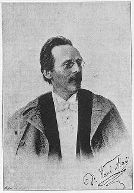
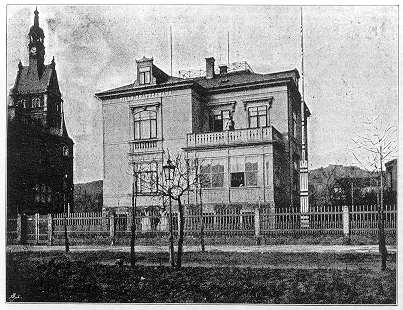
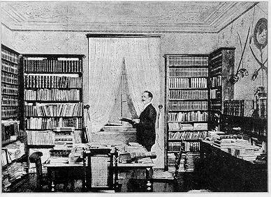

»Ei ku guli dichaze,
istiriyahn ssi lahzime bechaze!«
Wenn ein Autor von seinen Lesern aufgefordert, ja förmlich gedrängt wird, »doch auch einmal etwas über sich selbst zu schreiben,« so geht er nur, eben weil er so gedrängt wird, an die Erfüllung dieses Wunsches; denn er stürzt sich dabei kopfüber in die unvermeidliche Gefahr, ein Abu el Botlahn oder Dschidd el Intifahch, wie der Araber sich auszudrücken pflegt, genannt zu werden. Und wenn er gar sich der obenstehenden Überschrift bedient, sich also einen Vielgelesenen nennt, so hat diese Gefahr schon gleich bei der ersten Zeile einen solchen Grad erreicht, daß sie gar nicht größer werden kann. Damit ist aber auch sogleich die Angst überwunden, welche man vor Gefahren zu haben pflegt, und ich kann freien und heiteren Gemütes meinen lieben Leserinnen und Lesern sagen, daß ich mich schon deshalb als einen Vielgelesenen bezeichnen darf, weil nur ein solcher von den Freuden und ganz besonders von den Leiden reden kann, durch deren Besprechung an dieser Stelle ich mein Herz gern einigermaßen erleichtern möchte.

Daß ich kein Abu el Botlahn, sondern im Gegenteile ein bescheidener, durch seine Erfolge schwer niedergedrückter Schriftsteller bin, kann ich schon durch den Standpunkt beweisen, von welchem aus ich heute »meine Feder in die Tinte tauche«. Glücklich, dreifach glücklich ist nämlich der Autor zu preisen, dessen Werke nie zum Drucke angenommen werden! Sie bleiben sein unbestrittenes geistiges Eigentum, und er kann, ohne jemals widerrechtlich nachgedruckt zu werden, zwischen seinen vier Wänden und im Kreise seiner heimlichen Bewunderer so oft, als es ihm beliebt, in ihren Schönheiten schwelgen; sie dürfen ihm so lieb und so kostbar sein und bleiben wie eine Sammlung von Diamanten, die man nie verkauft. Schon weniger glücklich ist der Autor, welchem die Fatalität begegnet, ein oder einige Male gedruckt zu werden. Er ist dem Löwen der Öffentlichkeit in die unerbittlichen Pranken geraten, wird von ihm hin- und hergeworfen und hat von Augenblick zu Augenblick den entsetzlichen Biß zu erwarten, der ihm den Garaus macht. Das Honorar ist nur die Lockspeise gewesen, welche ihn in eine Lage brachte, der er nur durch die nunmehrige größte schriftstellerische Enthaltsamkeit entrinnen kann. Von einem vertraulichen, behaglichen, häuslich verborgenen Genusse seiner Geistesfrüchte kann keine Rede sein! Und nun erst derjenige unglückliche Litterat, den der obenerwähnte p. t. Löwe so fest hält, daß er nicht wieder loskommen kann! Er ist einem so beklagenswerten Geschick verfallen, daß jedes nur einigermaßen mitleidige Menschenkind ihm – – doch, wozu die Einleitung so lang machen! Ich gehöre ja leider selbst zu dieser Klasse von Duldern, und wenn ich von meinen Leiden erzähle, die von einigen seltenen Lichtblitzen nur umso stärker hervorgehoben werden, so werden damit die Qualen meiner Berufsgenossen auch beschrieben und ich brauche sie also gar nicht eingangsweise aufzuzählen.
Der Autor soll vor allen Dingen logisch sein, und da es keine größere Logik als diejenige der Thatsachen gibt, so lasse ich die Thatsachen sprechen, indem ich zunächst einen Tag, einen einzigen Tag der jetzt vergangenen Woche schildere.
Es ist Dienstag früh punkt sieben. Ich werde um Manuskript gedrängt, habe seit gestern Nachmittag drei Uhr, also sechzehn Stunden lang, am Schreibtische gesessen und kann, auch wenn ich nicht gestört werde, vor abends acht Uhr nicht fertig werden. Die Nacht, oft zwei, drei Nächte hintereinander, ohne dann am Tage schlafen zu können, ist überhaupt meine Arbeitszeit, der vielen Besuche wegen, welche täglich kommen, um »ihren« Old Shatterhand resp. Kara Ben Nemsi Effendi persönlich kennen zu lernen. Es klingelt unten am Eingange, und trotz der frühen Stunde wird mir ein Gymnasiast gemeldet, welcher so zeitig aus Dresden gekommen ist, um mich sicher anzutreffen. Beim Eintritte in die Studierstube erblickt er den mächtigen »Abu er Rad« im Hintergrunde, läßt vor Schreck die Thür offen stehen, macht dann einen Sprung vorwärts und stürzt mit dem Rufe »Dunner unds Messer, das ist ja ein Löwe, ein richtiger, wirklicher Löwe!« auf das von mir in Afrika geschossene Raubtier zu, wobei er aber an dem Kopfe des Grizzlybären hängen bleibt. »Allerdings,« antworte ich lächelnd. Das macht ihn darauf aufmerksam, daß ich auch da bin, und er wendet sich mir mit einer Verbeugung aus der Obersekunda zu, um mir den Zweck seines Besuches zu erklären. Er will sich nämlich folgendes von mir erbitten: eine Locke von Winnetou, einen Revolver, weil ich doch so viele hier hängen habe, ein Straußenei und nur ein Viertelpfund von dem echten Dschebelitabak, den ich in meinen Werken so gepriesen habe. Ich erlaube ihm, sich einen Tschibuk mit Dschebeli zu stopfen, und während er, auf dem Divan sitzend, ihn mit der Miene eines Pascha von zwanzig Roßschweifen raucht, versuche ich, weiter zu schreiben, komme aber vor den hundert Fragen, die ich ihm beantworten muß, nicht dazu. Zu meiner Freude bittet er mich, meinen Garten und besonders »das künstliche Gebirge« mit dem chinesischen Pavillon ansehen zu dürfen. Ich gestatte es; er geht mit einer rätselhaften Verneigung zur noch immer offenen Thür hinaus, wirft sie mit Riesenkraft ins Schloß, und ich kann endlich wieder schreiben.
Es klingelt abermals. Man bringt mir eine Depesche folgenden Inhalts: »Heute mittag zwölf Uhr Hotel Europäischer Hof, Dresden – – Herbig.« Weil das Telegramm aus Leipzig kommt und mein dortiger Commissioner Herbig heißt, nehme ich mir vor, nach Dresden zu fahren, obgleich es mich befremdet, daß dieser Herr, anstatt zu mir nach Radebeul zu kommen, mir meine kostbare Zeit verkürzt.
Acht Uhr! Die erste Post wird abgegeben; dreißig Briefe von Lesern, darunter vier mit zusammen achtzig Pfennigen Strafporto, ein fast tägliches Vorkommnis; ferner drei Pakete und eine Kiste. Die Pakete enthalten Manuskripte jener Art glückseliger Schriftsteller, die keinen Verleger finden; ich soll sie verbessern und dann an Redaktionen senden, welche gute Honorare zahlen. Die Kiste enthält zwei halbe Flaschen Wein, die mir ein Leser sendet, weil er »so entzückt von meinen Werken« ist. Ich öffne und koste, nachdem ich zwei Mark fünfundneunzig Pfennige für unterlassene Frankierung und Verzollung bezahlt habe. Als Kenner schmecke ich, daß es ein Paysan für fünfzig Centimes pro Flasche ist. Ich bin natürlich von diesem Werke des Absenders nicht so entzückt, wie er von den meinigen, fühle mich aber verpflichtet, ihm einen für zwanzig Pfennige frankierten Dankesbrief zu schreiben.
Eben will ich mich wieder zur Arbeit setzen, da fallt mein Blick in den Garten. Der Gymnasiast ist mir über die Himbeeren geraten. Ich klingle, um ihm sagen zu lassen, daß meine gute Hausfrau auf diese Weise zu keinem Himbeersafte und Old Shatterhand zu keiner Limonade kommen könne; er geht höchst indigniert von dannen, und ich erfahre, daß er vorher auch schon meine köstlichen Riesenerdbeeren, die ich mir mit vieler Mühe und durch eine Reihe von Jahren aus einer einzigen, von mir selbst hybridisierten Pflanze gezogen habe, den Weg aller Beeren habe gehen lassen. Wahrscheinlich hat er geglaubt, daß es eines Westmannes wie Old Shatterhand unwürdig sei, sich mit süßen Erdbeeren zu äsen!
Ich habe vielleicht eine halbe Seite geschrieben, da höre ich auf der Straße wiederholt meinen Namen nennen. Ich trete auf den Balkon und blicke, hinter Blumenranken versteckt, hinab. Da stehen vier junge Burschen, nehmen die Villa in liebreichen Augenschein und werfen sich ihre leise sein sollenden aber sehr vernehmbar ausfallenden Bemerkungen zu:
»Es ist richtig, ganz richtig! Mer ham uns nich verloofen! Siehste denn nich die großen, goldnen Buchstaben da droben, Du Dummkopp, Du? Das heeßt »Villa Schschschatterhand«. Mer sin also an Ort und Schtelle! Itzt kannste klingeln!« – – »Nee, ich nich!« – – »Warum denn nich?« – – »Ich fürcht mich so.« – – »Unsinn! Er wird Dich nich beißen! Hast's doch gelesen, was für een guter Kerl er is!« – – »Wenn er aber grad heute schlechte Laune hat-!« – – »Warum denn grad heute? Klingle nur; drück nur immer off'n Knopp! Du wirscht gleich sehn, daß das elektrisch is!« – – »Nee, ich drücke nich!« – – »Na, da drück Du, August!« – – »Ich ooch nich! Höre, wenn er böse wird! Mer wolln lieber wieder heemegehn!« – – »Emil, Du?« – – »Nee, ich hab ooch solche Angst!« »Na, wißt Ihr, was mer machen? Mer losen, und wen's trifft, der drückt off'n Knopp, aber feste, daß mersch ooch hört!«
Sie losen mit Streichhölzern, und dann schieben sie den Betreffenden an den »Knopp«. Die Glocke tönt, und sie fahren erschrocken auseinander. Ich trete ins Zimmer zurück, und bald werden mir die vier »Bewunderer« angemeldet. Es sind Cartonnagearbeiter. Ihr Prinzipal feiert heute seinen Geburtstag; da wird nicht gearbeitet, und die dadurch hervorgerufene feierlich frohe Stimmung hat ihnen den Mut gemacht, den Verfasser ihrer Lieblingsbücher aufzusuchen. Ich lasse sie natürlich kommen. Sie stellen sich wie Orgelpfeifen nebeneinander an der Thür auf, starren mit weit offenen Augen meine Jagdtrophäen an und wagen vor Angst nicht zu sprechen. Meine Freundlichkeit verfehlt aber ihre Wirkung nicht, und bald erklärt mir der Beherzteste von ihnen:
»Eegentlich sin wir Viere als Deputation abgeschickt. Sie werd'n nämlich von der ganzen Fabrik gelesen, wenn ooch bloß nur aus der Leihbibliothek. Aber mer ham Sie alle liebgewonnen, und ooch die Großen halten sich lieber Ihre Bücher, als daß se ins Wirtshaus gehn. Der Prinzipal spricht, Sie wär'n een wahrer Segen für seine ganze Cartonnage!«
Ich zeige ihnen alles, was zu sehen ist, beglücke sie mit einem Glase Wein, weil Geburtstag ist, und entlasse sie mit einem Gruße an den Prinzipal und ihre Mitarbeiter. Sie gehen stolz wie Spanier ab, und als sich unten das Thor hinter ihnen geschlossen hat, höre ich die Urteile, welche sie über mich fällen:
»Na, ist er nich ganz gemütlich gewesen? Grad so wie Unsereener! Schtolz scheint er nich zu sein, gar nich!« – – »Nee; er hat grade so mit uns gered't, als ob mer ooch mit in Amerika und in Ägypten gewesen wären. Er hat mer sehre gefallen, sehre; das muß ich sagen!« – – »Und die vielen, großartigen Sachen, die er hat, Allebonnöhr! Es is mer ganz angst und bange geworden, als mich der wilde Büffel so anguckte, und der Cojote und der Leopard! Und der Löwe erscht! Und sogar Wein ham mer gekriegt! Na, kommt, mer wolln machen, daß mer heeme kommen und erzählen können, sonst vergess'n mer alles wieder! Die andern wär'n sich aber ärgern, daß se nich ooch mitgewesen sin. So is es aber, wenn mer keenen Mut besitzt; nu ham se nischt gesehen!«
Inzwischen ist es neun Uhr geworden, und ich vertiefe mich so in die Arbeit, daß mir ein abermaliges Glockenzeichen entgeht. Meine Frau, welche weiß, wie notwendig ich zu arbeiten habe, kommt, um mich besorgt zu fragen, ob man mich stören dürfe. Ich verneine, sehr energisch, erfahre aber, daß eine Dame mit zwei jungen Herren in einer Equipage angekommen sei, welche mir ihren Namen zwar erst beim Gehen sagen wolle, aber dennoch nicht gut abgewiesen werden könne, weil sie jedenfalls von hoher Distinktion sei. Ich lasse also die Herrschaften kommen; sie bleiben weit über eine Stunde bei mir, während welcher Zeit ich wieder hundert Fragen zu beantworten habe, und beim Abschiede erfahre ich, daß mir die Ehre geworden ist, Ihre Durchlaucht, die Fürstin J. aus Wien mit ihren Prinzen bei mir zu sehen. Sie hat sich erst jetzt genannt, um zu verhüten, daß ich besondere Rücksichten auf ihren Stand nähme. Ich geleite sie zum Wagen und sehe einen Herrn kommen, den ich sofort als geistlichen Herrn taxiere. Er bleibt stehen, bis die Pferde anziehen, und begrüßt mich dann mit meinem Namen. Er hat mich nach den von mir existierenden Bildern erkannt und stellt sich mir als den Regens eines Priesterseminars vor, dessen Lehrer und Schüler alle Leser von mir sind. Ich habe mit diesem hochwürdigen Herrn oft und gern Briefe gewechselt, freue mich außerordentlich über diesen Besuch, fordere ihn auf, mein Gast zu sein, und bitte nur um die Erlaubnis, für zwei Stunden nach Dresden zu dürfen, um mit meinem Leipziger Commissioner, der mir telegraphiert habe, sprechen zu können. Er ladet sich für von übermorgen an zu Gaste, da er heute und morgen in Dresden sein müsse, und wir gehen nach einer halben Stunde zur Bahn, um in den Zug nach der Residenz zu steigen.
Unterwegs begegnet uns eine Dame in Trauer, welche uns nach der Wohnung von Dr. May fragt. Ich beschreibe ihr den Weg, ohne zu sagen, daß ich der leider allzusehr heimgesuchte Besitzer derselben bin, denn ich bin überzeugt, daß wir, wenn ich dies thäte, den Zug versäumen würden. Am Bahnhof faßt mich ein hiesiger Herr ab, um mich zu fragen, wann ich heute zu sprechen sei; er habe Besuch aus Breslau, einen Herrn und eine Dame, welche nicht hier gewesen sein wollen, ohne daheim erzählen zu können, daß sie mich gesehen haben; morgen seien sie nicht mehr da. Ich gebe eine Zeit an, denn ich weiß jetzt, daß ich das Manuskript nun einmal nicht bis abends acht Uhr fertig bringe, sondern auch die nächste Nacht daran zu schreiben habe. In Dresden angekommen, trenne ich mich auf Wiedersehen übermorgen von meinem Begleiter und fahre, um ja nicht verspätet zu kommen, per Taxameter nach dem »Europäischen Hofe«.
Da mein Commissioner dort nicht zu sehen ist, muß ich warten und bestelle, weil es kein Bier gibt, eine Flasche Wein. An einem Tische frühstücken drei Herren. Nach einiger Zeit gesellt sich ein vierter hinzu, welcher Herbig genannt wird. Ich gehe hin, nenne meinen Namen und frage ihn, ob er vielleicht heute früh von Leipzig aus an mich telegraphiert habe. Er springt erfreut auf, streckt mir die Hand entgegen und ruft:
»Ja, das habe ich, das habe ich! Ich bin aus Nürnberg, Reisender in Spielwaren. Sie besitzen dort viele Freunde und Leser, und ich bin beauftragt, Sie aufzusuchen, um genau beschreiben zu können, wie Sie eigentlich aussehen.«
»Sie haben mich aber nicht aufgesucht, sondern mich nach Dresden und hierher befohlen!«
»Weil ich keine Zeit hatte, nach Radebeul zu fahren; ich muß bald wieder fort. Geben Sie mir also die Hand! Wir möchten nämlich gern wissen, ob Sie wirklich so kräftig sind, wie in Ihren Werken steht.«
»Also, weil Sie keine Zeit haben, glauben Sie, muß ich welche haben? Wenn jeder meiner Leser sich erlauben wollte, in so unverfrorener Weise über mich zu verfügen, würfe ich aus Rücksicht auf diese Rücksichtslosigkeiten noch heute die Feder weg! Fühlen Sie denn nicht, daß Sie mich wie einen Domestiken behandelt haben, den man nach Belieben citieren kann? Und meine Hand wollen Sie? Da, geben Sie her!«
Er legt seine noch immer ausgestreckte Rechte in die meinige. Ich will sie ihm zur Strafe kräftig drücken, habe aber meine Finger noch nicht fest zusammengeschlossen, da brüllt er:
»O weh, o weh! Halten Sie ein; lassen Sie mich los! Sie sind nicht gescheit!«
Die Anwesenden sind bei seinem Schmerzensschrei alle aufgesprungen; er hält die Rechte mit der Linken und hüpft von einem Beine auf das andere. Ich bezahle den Wein und gehe, mit mir selbst unzufrieden, daß ich ihm die Hand nicht fester gedrückt habe, er hätte da für einige Zeit das Schreiben von Depeschen, und nicht nur dies allein, lassen müssen!
Es ist gegen zwei Uhr, als ich wieder nach Hause komme. Die Dame in Trauer sitzt im Salon; sie will mich partout sprechen und hat sich durch nichts bewegen lassen, fortzugehen, selbst nicht durch die Erklärung meiner Frau, daß sie in der Küche beschäftigt sei und sie allein lassen müsse. Halb erstaunt und halb zornig über eine solche Beharrlichkeit, begebe ich mich zu der Wartenden. Sie erkennt mich und macht mir Vorwürfe, daß ich ihr nicht gesagt habe, wer ich bin; ihre Angelegenheit sei so wichtig, daß ich sicher nicht nach Dresden, sondern mit ihr zu mir zurückgegangen wäre. Dann fährt sie fort:
»Mein Mann war Grenzaufseher und nebenbei ein hochbegabter Kunstmaler. In seiner letzten, langwierigen Krankheit schenkten Sie ihm infolge einer Bitte unsers Pfarrers einige Ihrer Bände. In seiner Begeisterung über den Inhalt hat er sie illustriert, und nun komme ich nach seinem Tode, um Ihnen die Kunstwerke zu verkaufen. Ich bekomme dadurch die Mittel zu meinem Unterhalte, und Sie werden noch viel berühmter werden, als Sie jetzt schon sind, und die großartigsten Geschäfte machen, denn wenn Ihre Werke mit solchen Bildern erscheinen, muß sich der Absatz derselben in einem Jahre schon auf Hunderttausende belaufen.«
»Liebe Frau, nach Berühmtheit trachte ich nicht; ich verfolge ganz andere, höhere Zwecke. Ich will Freund meiner Leser sein, weiter nichts. Was war Ihr Mann, ehe er Grenzbeamter wurde?«
»Unteroffizier. Er hat in Frankreich einen Säbelhieb über den Kopf bekommen; das hing ihm in der letzten Zeit so an, daß er dispensiert werden mußte.«
Sie zieht ein Papierpaket aus der Tasche und gibt es mir. Es enthält die Illustrationen. Ich öffne es und lasse Blatt um Blatt durch meine Hände gleiten. Sie glichen den Bleistiftversuchen eines Tertianers. Die Unterschriften beziehen sich auf Namen und Situationen, welche in meinen Reiseerzählungen vorkommen; wäre das nicht, so wüßte man gar nicht, was diese »Kunstwerke« vorstellen sollen. Arme Frau! Anstatt zornig über sie zu werden, muß ich ein herzliches Mitleid mit ihr fühlen. Der Säbelhieb hat nicht nur den Kopf, sondern auch den Geist ihres Mannes getroffen gehabt, wenngleich diese Verletzung erst später zu bemerken war. Und sie, die Kenntnislose, hat an seine Befähigung geglaubt! Während ich darüber nachsinne, wie ihr die Wahrheit ohne Kränkung und allzu schwere Enttäuschung mitzuteilen ist, richtet sie ihr Auge mit ruhelosem, fast fieberhaftem Blick auf mich und zieht, wohl um mein günstiges Urteil zu beschleunigen, einen Brief hervor, den ihr Pfarrer an mich geschrieben hat. Ich lese ihn. Es ist so, wie ich dachte. Sie ist durch Leiden geistesschwach geworden und hält jeden, der behauptet, daß die Zeichnungen nichts taugen, für einen Feind; sie war durch nichts davon abzubringen, zu mir zu fahren, um mir die Bilder zu einem hohen Preis zu verkaufen. Ich muß sehr vorsichtig verfahren und lade sie ein, einige Tage bei mir zu wohnen, bis ich mir die Angelegenheit überlegt habe. Sie geht vergnügt darauf ein, und ich begebe mich in die Küche, die ich sonst nur höchst selten betrete, um meine darüber nichts weniger als entzückte Frau zu bitten, mir nicht bös zu sein.
Es wird gedeckt, und wir setzen uns mit der neuen Bewohnerin unsers Hauses zu Tische. Ich habe kaum die Suppe gekostet, so muß ich den Löffel wieder weglegen, weil schon jetzt der hiesige Herr mit seinem Breslauer Besuche kommt. Die guten Leute stellen sich zwei Stunden früher ein, weil sie gerade jetzt zufälligerweise hier vorbeigegangen sind! Ob sie stören, das ist Nebensache. Der Breslauer Leser ist ein dicker, jovialer Herr mit einem Vollmondsgesicht; ich kann ihm nicht zürnen, habe aber Hunger und erlaube mir deshalb eine sehr bescheidene und versuchsweise Hindeutung darauf, daß meine Frau bei Tische sitze und auf mich warte. Da erklärt er mir, gemütlich lachend:
»Herr Doktor, der Mensch soll sich mehr auf das Trinken als auf das Essen legen; ich verstehe das gründlich, denn ich bin Bierbrauer! Jetzt seh'n wir uns bei Ihnen um, und dann gehen Sie mit uns, ein Glas Pilsener trinken. Wer soviel gedürstet hat wie Sie in der Sahara und auch anderwärts, der muß trinken, trinken, trinken!«

»Vorausgesetzt, daß er Zeit und Appetit dazu hat; ich aber habe weder das eine noch das andere. Besonders heute ist mir meine Zeit so karg zugemessen, daß – –«
Er läßt mich nicht aussprechen, sondern fällt mir schnell in die Rede. Er erklärt mir mit bewundernswerter Unbefangenheit, daß ein Verfasser, dem soviel Liebe und Anerkennung entgegengebracht werde, stets Zeit für seine ihn aufsuchenden Leser haben müsse. Er verbreitet sich heiteren Mutes über die unschätzbaren Freuden, die mir die schriftliche und persönliche Anhänglichkeit so vieler Menschen bereiten müsse, und beweist mir bis zur Unwiderlegbarkeit, daß ich dafür verpflichtet sei, die dabei unvermeidlichen kleinen Leiden dankbar in den Kauf zu nehmen. Vor Hunger und um die lange Filaria seiner Rede abzukürzen, rufe ich, in Ergebenheit die Hände faltend und das eingangsstehende Sprichwort recitierend:
»Sie haben recht, nur zu recht! Ei ku guli dichaze, istiriyahn ssi lahzime bechaze!«
»Wie heißt das, und aus welcher Sprache ist es?«
»Es ist Kurmangdschikurdisch und heißt: Wer sich die Rose wünscht, muß auch die Dornen wünschen!«
»Das ist richtig, sehr richtig! Nehmen Sie meine Frau hier als die Rose und mich als Dorn, so haben Sie beides, und alle Ihre Wünsche sind erfüllt! Und wenn Sie wieder einmal in einem Ihrer Bände über die vielen Briefe und Besuche klagen, so geben Sie Ihren Stoßseufzern dieses Sprichwort als Überschrift, damit ich nicht der einzige Mensch bleibe, der sich als einen Ihrer Dornen betrachten muß! Wir Leser können gar nicht anders, wir müssen uns als Ihre Freunde betrachten und – – horch! Hat das nicht unten geklingelt?»
»Ja,« antworte ich, sogleich von einer schlimmen Ahnung wie von einem feindlichen Indianer beschlichen.
»Hoffentlich wieder ein Besuch! Sollte mich sehr freuen!»
Wie gern würde ich dem holdselig lächelnden Bierbrauer meinen bekannten Jagdhieb zu fühlen geben; aber wir befinden uns nicht im wilden Westen, sondern in meinem Studierzimmer, und er reibt sich mit aufrichtigem Vergnügen, bei mir einen meiner Leser kennen lernen zu dürfen, die Hände, daß mein Zorn gar nicht aufkommen kann. Meine Ahnung hat mich nicht betrogen, denn das Zimmermädchen kommt, zu fragen, ob mein Weinhändler eintreten dürfe. Er ist ein eifriger Leser des »Deutschen Hausschatzes« und fühlt als solcher die mir sehr angenehme Verpflichtung, in meinem Keller nur unverfälschte Tropfen zu dulden. Ein heiterer Lebemann, macht er, wie jeder seiner Kollegen, sehr gern Geschäfte, und es ist wohl selten einem Sterblichen gelungen, mit ihm eine halbe Stunde beisammenzusitzen, ohne eine Bestellung aufzugeben. Er hat, wie schon öfters, auch heute seine Frau mitgebracht. Ich begrüße beide in zuvorkommendster Weise, denn es ist in mir ein teuflischer Gedanke aufgetaucht: dieser Jünger des Bacchus aus Frankfurt am Main soll mich, ohne daß beide es ahnen, von dem klebrigen Jünger des Gambrinus aus Breslau befreien! Ich stelle die Damen und Herren einander vor und werfe ihnen einige Millionen Gärungspilze in das beginnende Gespräch. Dieses für sie hochinteressante Thema ist die Brücke, auf welcher sie sich schnell nähern und Wohlgefallen aneinander finden. Dann führe ich den Weinhändler in die nebenanliegende Bibliothek, um ihm seine Rechnung zu bezahlen, und werfe da die hinterlistige Bemerkung hin:
»Dieser Herr würde wahrscheinlich ein Faß Niersteiner oder Josephshöfer bestellen.«
»Wirklich?« erklingt die schnelle, eifrige Frage. »Da will ich Sie nicht lange belästigen, Herr Doktor. Was hat der Mann für jetzt vor?«
»Er wollte gehen, ein Glas Pilsener zu trinken.«
»Bier? Fällt mir nicht ein! Ich bugsiere ihn nach Lechlas Weinstube, und zwar unverweilt. Bitte, gehen Sie nicht mit! Ich möchte nicht, daß er durch Ihre Gegenwart abgelenkt wird. Nehmen Sie mir das nicht übel, und leben Sie für heute adjeh!«
Zwei Minuten später sehe ich sie mit ihren Frauen unten aus meinem Thore treten und Arm in Arm den Weg nach Lechla einschlagen. Ich bin vollständig überzeugt, daß beide morgen wieder zu mir kommen werden, um mir mitzuteilen, daß der Gambrinus noch nicht abgereist sei, weil ihm der Bacchus so außerordentlich gut gefallen habe. Ich aber habe meinen heimtückischen Zweck erreicht und kann nun wieder nach dem Speisezimmer gehen.
Während des Essens fallt mir ein, daß ich die zweite Post noch nicht aus dem Briefkasten genommen habe; die dritte muß auch schon angekommen sein. Nach zehn Minuten bin ich fertig und hole sie. Der Kasten ist innen am Thore befestigt. Während ich den Inhalt herausnehme, kommt ein Herr, der klingeln will, dies aber unterläßt, als er mich stehen sieht. Er stellt sich als Verlagsbuchhändler N. aus Wien vor, hat mein Ave Maria in »Winnetou«, Band III, gelesen und möchte einen Band Gedichte von mir veröffentlichen. Ich sage ihm, daß es mir unmöglich sei, mit neuen Verlegern zu kontrahieren, und daß meine Gedichte erst nach meinem Tode gedruckt werden sollen. Ich weiß, es ist eine Unhöflichkeit, ihn so vor dem Thore abzufertigen, und er läßt auch eine darauf bezügliche Bemerkung hören, aber ich bin nun zum Wurme geworden, der sich endlich einmal krümmen will. Nach soviel Störungen will ich für den Rest des Tages mein Studierzimmer für mich allein haben!

Dr. Karl May's Bibliothek.
Nun sitze ich wieder oben und gehe die Kouverts der eingegangenen Sachen durch. Zum Öffnen und Lesen habe ich heute keine Zeit. Ein Brief ist kurz adressiert: »Mr. Shatterhand, Dresden«; er ist selbstverständlich nach Radebeul zu mir expediert worden Ein Brief aus Köln am Rhein ist mit der Aufschrift versehen: »Herrn Schriftsteller Karl May«. Der Schreiber desselben hat vergessen, den Bestimmungsort hinzuzufügen; die postamtliche Ergänzung lautet: »wahrscheinlich Oberlößnitz-Radebeul bei Dresden, Villa Shatterhand«. Der betreffende Postbeamte ist jedenfalls ein Hausschatzleser. Ein anderer Brief kommt aus dem Kaukasus, wohl wieder eine Einladung zur Auerochsenjagd. Ich lege das alles weg und beginne, wieder zu schreiben. Trotz der gehabten Zerstreuungen komme ich in sehr guten Fluß und freue mich schon, daß ich wohl nicht die ganze Nacht zu arbeiten haben werde, wenn das so fort aus der Feder läuft, da klingelt es schon wieder. Das braucht nicht mir zu gelten, und doch lege ich die Feder weg, um zu horchen. Ein lebhafter Wortwechsel klingt vom Thore zu mir herauf. Ich höre jemand, der nicht hereingelassen werden soll, von »Wichtigkeit« und »Unaufschiebbarkeit« sprechen, und dann bringt mir das Mädchen eine Karte. Der Herr sei nicht abzuweisen; er müsse mich unbedingt sprechen, da die Sache heute erledigt werden müsse. Der Einlaßbegehrende ist auf seiner Karte als Gerichtssekretär bezeichnet, und für die Behörde muß man jederzeit zu sprechen sein; ich lasse ihn also zu mir weisen.
Er tritt in sehr höflicher, ja devoter Weise ein; ich biete ihm einen Stuhl und bemerke bei dieser Gelegenheit, daß seine Stiefel etwas offenherzig sind und seine übrige Körperbedeckung sich in einem außergerichtlich-fadenscheinigen Zustande befindet. Er kommt der Aufforderung, welche in meinem Blicke liegen mag, mit außerordentlicher Zungenfertigkeit nach, indem er mir erzählt, die »Liebe zur Feder« habe ihn veranlaßt, auf seine vielverheißende gerichtliche Carriere zu verzichten und Journalist zu werden. Sein innerer, unwiderstehlicher Beruf prädestiniere ihn zur Kritik, und so sei er für dieses Fach Mitarbeiter der bedeutendsten deutschen Zeitungen geworden. Leider aber werde gerade die Kritik unter aller Kritik bezahlt, auch sei es ganz unvermeidlich dabei, sich einflußreiche Feinde zu erwerben; diese beiden Umstände, vereint mit dem dritten, daß gerade das Genie am leichtesten verkannt und am meisten verfolgt werde, habe ihn nach und nach um alle Stellungen gebracht und, mit Respekt zu vermelden, ein so großes Loch in den Beutel gemacht, daß vor einigen Tagen der letzte seiner Pfennige hindurchgeschlüpft sei. Er befinde sich auf der Reise von Berlin nach Wien, und seine Frau sitze mit zwei Kindern im Gasthofe in Dresden, von den Kellnern bewacht, weil eine dreitägige Rechnung zu bezahlen sei. Ein Rundgang bei den Journalisten Dresdens habe nichts gefruchtet, und nun sei Karl May der einzige Rettungsanker, den es für ihn gebe.
»Wieviel brauchen Sie?« fragte ich in der Absicht, die Sache kurz zu machen.
»Rund hundertfünfzig Mark.«
»Das muß allerdings auch ich rund nennen! Sie hatten freilich recht, als Sie diese Angelegenheit meinem Mädchen als eine wichtige und unaufschiebbare bezeichneten; nur hätte ich erwarten dürfen, daß sie das nicht für Sie, sondern für mich sei. Einem Genie, als welches Sie sich bezeichnen, darf ich kein Almosen anbieten, aber ich will Ihnen Gelegenheit geben, die genannte Summe in kürzester Zeit bei mir zu verdienen, indem Sie einen neuen Katalog meiner Bibliothek anfertigen.«
»Katalog?« fragte er erstaunt. »Ich bin Kunstkritiker, aber kein Bibliograph!«
»Das ist im allgemeinen kein Fehler, denn ein Kritiker kann ausnahmsweise auch einmal das Geschick besitzen, einen brauchbaren Katalog auszuarbeiten.»
»Sie scheinen ironisch zu sprechen, Herr Doktor!«
»Allerdings! Ich bin bereit, Ihnen auf eine anständige Weise, durch welche Sie sich nicht erniedrigt fühlen, zu helfen; Sie aber scheinen sich über mein Entgegenkommen zu wundern.«
»Dazu bin ich doch berechtigt, denn ich brauche bares Geld, nicht aber Arbeit.«
»Wenn ich Geld brauche, so arbeite ich. Da Sie nicht arbeiten wollen und doch Geld verlangen, so scheinen Sie anzunehmen, daß die Arbeit für den einen, das Geld aber für den andern sei?«
»Was ich annehme, das geht Sie gar nichts an! Ich verzichte auf Ihre Arbeit und auch auf Ihr Geld. Wahrscheinlich haben Sie selber nichts als Schulden. Ein Schriftsteller, der nicht lumpige hundertfünfzig Mark für einen Kollegen übrig hat, der ist in meinen Augen nichts; das merken Sie sich! Adieu!«
Er geht mit einer höhnischen, verachtungsvollen Geste zur Thür hinaus und hält sich für zu vornehm, sie hinter sich zuzumachen. Ich warte, bis sich unten das Eingangsthor hinter dem genialen Kritiker geschlossen hat, und nehme dann die von ihm unterbrochene Arbeit wieder auf, rufe aber vorher dem Mädchen zu, daß ich von jetzt an für jedermann, er mag sein und heißen, was und wie er wolle, einfach nicht zu Hause sei.
Von jetzt an bringe ich ungestört vier oder fünf Seiten fertig, ich höre klingeln und wieder klingeln, achte aber nicht darauf, weil ich ja nicht zu Hause bin. Da kommt meine Frau und teilt mir mit, daß ein fremder Mensch sich den Eingang erzwungen habe und nun im Garten herumlaufe.
»Ein fremder Mensch? Erzwungen? Wer ist er denn?« frage ich.
»Das weiß ich nicht; er sagt es nicht. Er will Dich überraschen. Er sieht fast wie ein Vagabund aus, spricht fremdartig und will auf Deine Heimkunft warten. Der sonderbare Mensch behauptet, Du werdest ihn dann sofort einladen, bei uns zu bleiben.«
»Den muß ich mir doch einmal ansehen. Komm!»
Ich trete aus dem nach der Straße gelegenen Studierzimmer in die Bibliothek, aus welcher ein zweiter Balkon nach dem Garten geht, da thut es an der Balustrade dieses Altanes einen lauten Krach, und ich sehe die oberen Sprossen meiner Baumleiter erscheinen, welche soeben dort angelegt worden ist. Ich eile hinaus, und als ich das Geländer erreiche, erscheint auf der Leiter der »sonderbare Mensch«, von dem meine Frau gesprochen hat.
»Was wollen Sie da? Steigen Sie sofort hinab!« rufe ich ihm zu.
»Nicht hinab, but hinauf!« antwortet er, indem er über das Geländer springt. Er ist ein kleiner, dünner, aber sehniger Kerl mit einem stark ausgeprägten, pfiffigen Vogelgesicht. Ein dünner Vollbart, zwischen dessen Haaren die Haut zu sehen ist, bedeckt seine Wangen, die Oberlippe und das Kinn. Seine Füße stecken in grauen, weitmaschigen sogenannten Paradiesschuhen, auf dem Kopfe trägt er einen alten, abgebrauchten Luffahelm; dazu kommt eine braune, verkniete Hose, ein grüngelbes Jackett und eine hellblaue Weste, über welche die Zipfel eines roten Halstuches weit herabhängen. Er zieht den Helm vom Kopfe, mustert mich mit listigen Augen und fragt in geläufigem aber fremdbetontem Deutsch:
»Sie sind Mr. Kara Ben Nemsi Effendi, nicht wahr, Sir?«
»Ja,« antwortete ich
»Also habe ich richtig kalkuliert, very right! Habe es Ihrer little maid gleich angesehen, daß sie mich belog, als sie behauptete, Sie seien nicht at home!«
Er scheint ein Westmann oder etwas Ähnliches zu sein, darum sage ich viel milder, als es sonst geklungen hätte:
»Und wenn man Sie fortweist, drängen Sie sich durch das Thor, gehen im Garten spazieren und steigen gar mit Hilfe der Leiter auf den Balkon! Wer sind Sie denn?»
»Ich heiße Kraft,« lacht er, »und bin auf die Leiter geklettert, weil ich dachte, daß Sie hier oben zu finden seien. Ganz vortreffliche Idee, nicht?«
»Allerdings; aber ich kenne keinen Mann Namens Kraft, der sich so ohne alle Frage erlauben dürfte, auf meinen Leitern herumzuklettern!«
»Glaube es, glaube es sehr gern, Sir. Vielleicht ist Ihnen ein anderer Name geläufiger als der meinige; ich will da zum Beispiel von einem gewissen David Lindsay sprechen.«
»Lindsay?« fahre ich auf. »Kennen Sie den?«
»Will es meinen! Wissen Sie, wo er jetzt ist?«
»Nein, leider nein. Er ist nach Australien gegangen, um auf meinen Rat das Festland auf Kameelen zu durchqueren, hat diese schwierige Expedition, wie in allen größeren Zeitungen zu lesen war, zum glücklichen Ende gebracht und dabei nicht nur Gold-, sondern auch, was ich für noch besser halte, sehr ansehnliche Kohlenfelder entdeckt. Wo er sich gegenwärtig befindet, ist mir unbekannt.«
»So haben Sie den richtigen Mann vor sich, es zu erfahren, denn ich bin während dieser Überlandreise bei ihm gewesen und auch später noch längere Zeit bei ihm geblieben. Als ich dann vor einigen Monaten mich auf nach Deutschland machte, trug er mir auf, Sie zu besuchen und Ihnen einen Brief von ihm zu übergeben.«
»Einen Brief von meinem alten Lindsay? Das ist ein außerordentlich freudiges Ereignis für mich! Haben Sie ihn mit?«
»Yes , hier in der Tasche. Bin ja nur deshalb auf die Leiter gestiegen, um Ihnen das paper noch eher zu geben, als Sie at home kommen konnten, Sir!«
»So kommen Sie herein! Haben Sie Hunger, Durst?«
»Hunger wie ein Löwe und Durst wie ein Kameel!«
»So eile, Emma, und sorge für den Mann! Er wird natürlich bei uns wohnen, solange es ihm gefällt.«
Während meine Frau sich entfernt, führe ich den unerwarteten aber hochwillkommenen Gast in das Studierzimmer, wo ich es ihm überlasse, die Einrichtung desselben unter lauten Ahs und Ohs in Augenschein zu nehmen, während ich mich über den zwanzig engbeschriebenen Seiten langen Brief hermache. Noch bin ich damit nicht zu Ende, als das Mädchen mit dem Imbiß erscheint. Er klopft sie lachend auf die Schulter und fragt:
»Nun, my plum, habe ich recht gehabt oder nicht? Ich bin hier Gast, solange ich will, und wenn es mir gefällt, bleibe ich da, bis mir Wurzeln aus den Füßen wachsen. Das sind schlimme Folgen, wenn man Uncle Kraft die Nase mit dem Thor abschlagen will!«
Es versteht sich ganz von selbst, daß nun von der Beendigung meiner Arbeit nicht mehr die Rede sein kann, und ob ich sie morgen oder übermorgen fertig bringe, das ist auch noch ungewiß. Wer weiß, welche Besuche ich wieder zu empfangen habe, und wie lange Kraft zubringt, um mir alles, was in dem Briefe kurz beschrieben wird, ausführlich zu erzählen! –
Man glaube ja nicht, daß ich diesen Dienstag beschrieben habe, weil die Störungen desselben ungewöhnlich seien; es passiert noch ganz anderes! Da besucht mich ein ungarischer Professor, nur für zwei Stunden; er ist aber neun Tage lang mein Gast. Ein Leser aus Amerika will mir nur die Hand drücken, nichts weiter; auch seine Frau will drüben sagen können, daß sie die Hand Old Shatterhands in der ihrigen gehabt habe. Ich thue ihnen den Gefallen, und so drücken wir uns zwei Wochen lang die Hände, denn solange sind sie bei mir geblieben. Ein sehr hoch stehender Herr besucht mich, als ich schwer an der Influenza liege; aus Rücksicht auf seinen Stand stehe ich auf und habe ihm nun bei 39 Grad Fieber sechs Stunden lang alle möglichen und unmöglichen Fragen zu beantworten. Das hat mich kaput gemacht, daß ich noch heute, wenn ich ihn sehe, in eine Art von Fieber gerate. Es ist mir geradezu unmöglich, mich ihm in der Ruhe zu zeigen, welche ich sonst stets besitze. Weniger gefährlich ist folgende kleine Episode:
Ich will mit meiner Frau ein Nachmittagskonzert besuchen und habe schon seit einer Stunde drei Realschüler bemerkt, welche draußen auf- und abgehen, ohne sich an die Klingel zu wagen. Als wir auf die Straße treten, werde ich von sechs Augen fast verschlungen und höre die Worte:
»Das ist er, ja, er ist's! Das ist seine Frau! Kommt, wir machen hinterher! Ich muß wissen, wo er hingeht!«